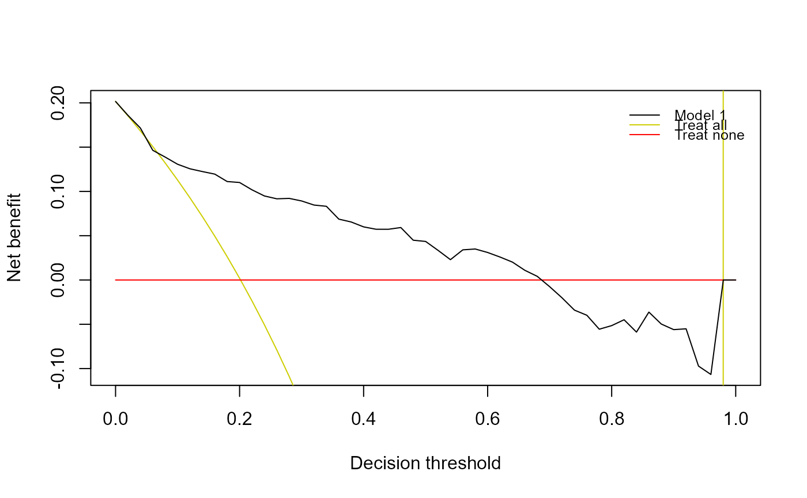
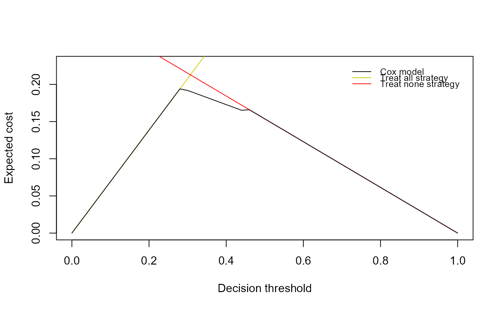
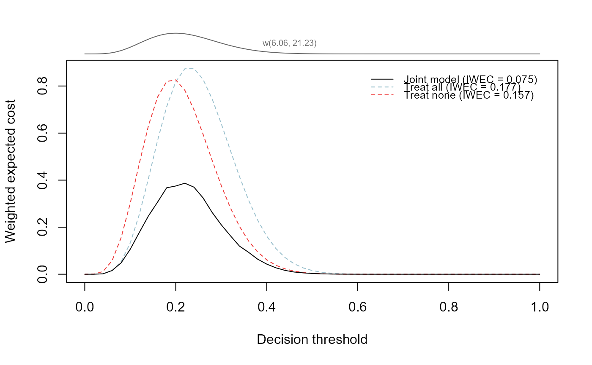

(Un)weighted Decision Curves for Dynamic Predictions under Left-Truncated and Right-Censored Data
decision_curves.RdComputes estimates of the net benefit or (weighted) expected cost over a grid of decision thresholds at a specified horizon time (Thoriz), using longitudinal information available up to a given starting time point (Tstart). The function supports joint models, Cox proportional hazards models and predictions obtained from any method. It provides inverse probability weighting and model-based estimation methods. For the weighted expected cost, the beta family of weight functions has been implemented. The plot.decision_curves() method displays the decision curves, supporting multiple models or decision strategies in the same graphic.
Usage
decision_curves(object, ...)
# Default S3 method
decision_curves(object, Time, event, LT_Time = NULL, Tstart,
decision_threshold_range = seq(0 + 1e-06, 1 - 1e-06, length.out = 51),
type = c("EC", "weightedEC", "NB"),
shape1 = NULL, shape2 = NULL, mod = NULL, interv = NULL, mass = 0.95,
Thoriz = NULL, Dt = NULL, type_weights = c("model-based", "IPCW"),
preds_MB = NULL, opt_interv = c(1, 500), ...)
# S3 method for class 'jm'
decision_curves(object, newdata, Tstart,
decision_threshold_range = seq(0 + 1e-06, 1 - 1e-06, length.out = 51),
type = c("EC", "weightedEC", "NB"),
shape1 = NULL, shape2 = NULL, mod = NULL, interv = NULL, mass = 0.95,
Thoriz = NULL, Dt = NULL,
type_weights = c("model-based", "IPCW"), opt_interv = c(1, 500), ...)
# S3 method for class 'coxph'
decision_curves(object, newdata, Tstart,
decision_threshold_range = seq(0 + 1e-06, 1 - 1e-06, length.out = 51),
type = c("EC", "weightedEC", "NB"),
shape1 = NULL, shape2 = NULL, mod = NULL, interv = NULL, mass = 0.95,
Thoriz = NULL, Dt = NULL, type_weights = c("model-based", "IPCW"),
opt_interv = c(1, 500), ...)
# S3 method for class 'decision_curves'
plot(x, ...,
col = c(rep(1, length(objects)), "yellow3", "red"),
lty = c(seq_along(objects), 1, 1),
lwd = rep(1, length(objects) + 2),
xlab = "Decision threshold",
ylab = "Expected cost",
main = "",
ylim = NULL, xlim = NULL,
legend_loc = "topright", legend_cex = 0.8,
legend_names = c(paste("Model", seq_along(objects)), "Treat all", "Treat none"),
weight_function = TRUE,
weight_function_txt = TRUE,
weight_function_col = adjustcolor("black", alpha.f = 0.6))Arguments
- object
an object inheriting from class
jmorcoxph, or a numeric vector containing the dynamic predictions to be evaluated.- newdata
a data.frame that contains the longitudinal and covariate information for the subjects for which prediction of survival probabilities is required. If a
jmobject is used, the names of the variables in this data.frame must be the same as in the data.frames that were used to fit the linear mixed effects and the event process model that were supplied as the two first argument ofjm. If acoxphis used it only applies to the event process. If the default method is used, the argument is not needed.- Tstart
numeric scalar denoting the time point up to which longitudinal information is to be used to derive predictions.
- decision_threshold_range
a numeric vector containing the grid of decision threshdolds to be used in the decision curves. Default is
seq(0 + 1e-06, 1 - 1e-06, length.out = 51)- Time, event, LT_Time
numeric vectors that must be specified when using the default method to compute the metric by directly using a vector of predictions, observed times (
Time), the event indicator (event) and (possibly) left-truncated times (LT_Time).- type
character string denoting the type of decision curve. Options are expected cost ("EC"; default), weighted expected cost ("weightedEC"; including IWEC estimates) and net benefit ("NB").
- shape1, shape2
numeric scalars greater or equal to 0 denoting the shape parameteres for the beta family of weight functions (see below for details).
- mod, mass, interv
two numeric scalars between 0 and 1 and a numeric vector with two scalars between 0 and 1, denoting the mode of the weight function and the mass (default is 95%) to be allocated within the interval defined by the two values in the numeric vector. These arguments can be used to compute the shape parameters in the weighted decision curves. See below for details.
- Thoriz
numeric scalar denoting the time point for which a prediction of the survival status is of interest;
Thorizmust be later thanTstartand eitherDtorThorizmust be specified. IfThorizisNULLis set equal toTstart + Dt.- Dt
numeric scalar denoting the length of the time interval of prediction; either
DtorThorizmust be specified.- type_weights
character string denoting the type of weights to use to account for censorting. Options are model-based (default) and inverse probability weighting (using the Kaplan-Meier estimate of the censoring distribution, and adjusting for left truncation if necessary).
- preds_MB
a numeric vector containing the model-based weights to be used for the individuals censored within (
Tstart,Thoriz]. It must be specified when using the default method and themodel-basedestimator. The vector must have length equal to the number of individuals considered and must include non-missing elements only for the censored individuals.- opt_interv
a numeric vector containing the end-points of the interval to be searched for the root. This argumentis used when
mod,massandintervare provided, and shape parameters are computed (see details below).- x
an object inhereting from class
decision_curvesused in theplotmethod for decision curves.- ...
additional arguments passed to
predict.jm(). For theplot.decision_curve()method, it is used to pass more objects ofdecision_curveclass when multiple decision curves need to be displayed.- col, lwd, lty, xlab, ylab, xlim, ylim, main
graphical parameters.
- legend_loc, legend_cex, legend_names
graphical parameters for the legend displayed in the decision curve.
- weight_function, weight_function_txt, weight_function_col
graphical parameters for the weight function displayed in the decision curve when types
ECorweightedECare used.weight_functionis a logical; should the weight function be displayed (default isTRUE).weight_function_txtis a logical; should the text in the weight function be displayed (default isTRUE).weight_function_colis the grapghical parameter for the color.
Details
The beta family of weight functions is consdiered for the weighted expectec cost. It is defined by the two-parameter form \(w(c;\text{shape1}, \text{shape2})=c^{\text{shape1}-1}(1-c)^{\text{shape2}-1}/B(\text{shape1}, \text{shape2})\), where \(\text{shape1}, \text{shape2}\geq 0\) are shape parameters and \(B(\text{shape1},\text{shape2})=1\) if \(\text{shape1}=\text{shape2}=0\), and otherwise denotes the beta function.
When mod, mass and interv are provided we compute the shape parameters shape1 and shape2 by solving the system consisting of the two equations: \(\text{mod}=\frac{\text{shape1} - 1}{\text{shape1} + \text{shape2} - 2}\) and \(\text{Pr}(X \in \text{interv}) = \text{mass}\), where \(X\) follows a beta distribution with shape parameters shape1 and shape2. To solve this system, the uniroot() function is internally used. The user can change the interval argument of the uniroot() function using the opt_interv argument.
Value
A list of class decision_curves with components:
- metric_c
a list of three components, each containing a numeric vector representing the net benefit or (weighted) expected cost for the prediction model, along with the default strategies of treating all patients or no patients, respectively.
- newdata
a data.frame containing the exact dataset used to compute the evaluated dynamic predictions.
- nr
a numeric scalar denoting the number of subjects at risk at time
Tstart.- nint
a numeric scalar denoting the number of subjects with an event in (
Tstart,Thoriz].- ncens
a numeric scalar denoting the number of subjects with a censored time in (
Tstart,Thoriz].- Tstart
a copy of the
Tstartargument.- Thoriz
a copy of the
Thorizargument.- type
a copy of the
typeargument.- shape1, shape2
a copy of the arguments
shape1andshape2.- decision_threshold_range
a copy of the
decision_threshold_rangeargument.- iwecs
a numeric vector containing the IWEC estimates, in case
type = "weightedEC".- type_weights
a copy of the
type_weightsargument.- classObject
the class of
object.- nameObject
the name of
object.
References
Vickers, Andrew J and Elkin, Elena B (2006). Decision curve analysis: a novel method for evaluating prediction models. Medical Decision Making 26, 565–574.
Author
Arnau Garcia-Fernandez a.garciafernandez@erasmusmc.nl, Pedro Miranda-Afonso p.mirandaafonso@erasmusmc.nl and Dimitris Rizopoulos d.rizopoulos@erasmusmc.nl
Examples
# \donttest{
# We fit a multivariate joint model
pbc2.id$status2 <- as.numeric(pbc2.id$status != 'alive')
CoxFit <- coxph(Surv(years, status2) ~ sex, data = pbc2.id)
fm1 <- lme(log(serBilir) ~ ns(year, 3) * sex, data = pbc2,
random = ~ ns(year, 3) | id, control = lmeControl(opt = 'optim'))
fm2 <- lme(prothrombin ~ ns(year, 2) * sex, data = pbc2,
random = ~ ns(year, 2) | id, control = lmeControl(opt = 'optim'))
jointFit <- jm(CoxFit, list(fm1, fm2), time_var = "year", n_chains = 1L)
# Classic decision curve using net benefit.
# We use landmark time 4 and prediction horizon 3.
dc_NB <- decision_curves(jointFit, newdata = pbc2, Tstart = 4, Dt = 3,
type = "NB", cores = 1L)
plot(dc_NB)

# Considering the Cox model, the IPW approach for estimation and
# shape parameters 12 and 38, we display the decision curve for the expected
# cost, with the weight function at the top part of the plot
dc_EC <- decision_curves(CoxFit, newdata = pbc2.id, Tstart = 2, Thoriz = 6,
shape1 = 12, shape2 = 38, type_weights = "IPCW",
cores = 1L)
plot(dc_EC, legend_names = c("Cox model", "Treat all strategy", "Treat none strategy"))

# We now display the weighted decision curve. The weight function is such that
# the mode is 0.2, the interval of interest for the decision thresholds is
# (0.1, 0.3) and the mass to be allocated within the interval is 0.85
dc_wEC <- decision_curves(jointFit, newdata = pbc2, Tstart = 4, Dt = 3,
mod = 0.2, interv = c(0.1, 0.3), mass = 0.8,
type = "weightedEC", cores = 1L)
plot(dc_wEC,
legend_names = c("Joint model", "Treat all", "Treat none"),
col = c("black", "lightblue3", "brown2"),
lty = c(1, 2, 2))

# }